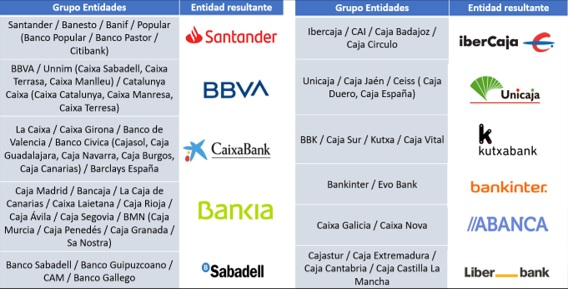
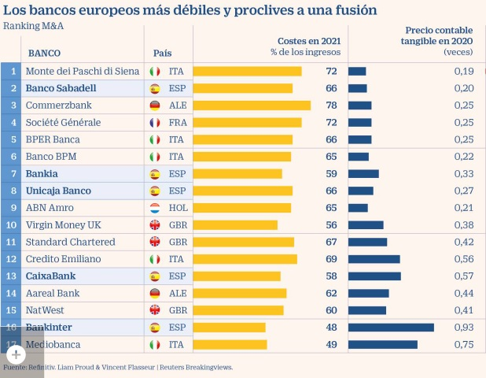
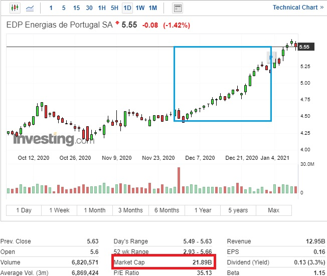
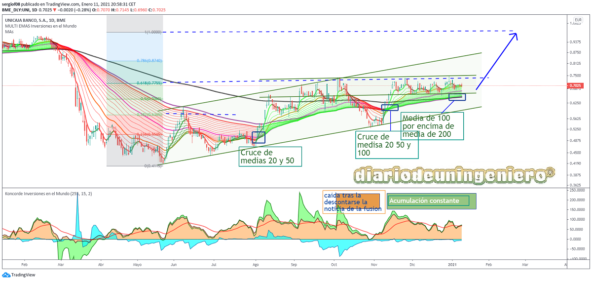

UNICAJA LIBERBANK FUSION
After the union of Caixabank and Bankia last summer or rather, the absorption of Bankia by caixabank, everyone pointed to Unicaja and Liberbank as a very possible merger. In fact, this merger had already been attempted in the past and was being attempted before Caixabank began to explore the merger with Bankia.

If we look at the image we can see how the map of Spanish banks has been after 10 years of mergers and acquisitions, with 10 banks currently after the merger of Caixabank and Bankia. If to this we add that of Unicaja and Liberbank, and the possible absorption of Sabadell in the next two years, plus the more than probable integration of Ibercaja, Kutxabank and Abanca by some other bank of the results, we would soon be left with 5 banks in Spain, which would be Santander, BBVA, Caixabank, Unicaja and Bankinter.
Here I will show a list drawn up by the newspaper 5 days in which the weakest banks in Spain prone to a merger or absorption were presented. That list is headed by Sabadell of Spain and very close was Unicaja. Liberbank does not appear to be collected in a smaller banking segment. And it is that Sabadell until recently had more costs than a large bank than a small bank and benefits that until last year, early 2020 did not begin to stand out after many adjustments. Right now all banks are beginning to digitize and carry out massive layoffs in order to save costs in the face of low rates in Europe that give little chance of profit. And it is that since 2012 the rates are almost at the minimum and after several years the ECB doubting whether to apply increases with the coronavirus crisis may not take off in another 10 years.

This fusion was very good because the two entities complement each other. Liberbank has more presence in Asturias, Cantabria, Castilla La Mancha and Extremadura, as it is the result of the savings banks of these communities. Where years ago they were predominant entities in which the administrations managed many accounts.
Unicaja, for its part, has it in Andalusia and Castilla y Leon due to the absorption of Caja Duero, which is where Caja España was (one of the most important banks there).
I spoke about this at 2019,
if you click here you will find more information. This merger is going to give many more synergies than those that Bankia with Caixabank can present, for example (Catalonia with Madrid and many parts of Spain).
Since it focuses much more on these territories and more than avoiding duplications that happens much more with Bankia and Caixabank, here what is done is to get the bank to dominate the territories that it already dominated but better prepared since the resulting software and the expense will be reduced by almost half.
Right at the beginning of the crisis with all banks with very negative forecasts, the only one in
having positive evaluations from abroad was Unicaja . Recommended by JP Morgan with target prices that at the beginning gave it a potential of 50% and that now give it short-term potential of another 50%, reaching the euro. This latest recommendation has come from both JP Morgan and Goldman & Sachs, giants of American banking.
Citibank, otro de los gigantes americanos también ha sido uno de los recomendadores de esta fusión que ya esta en su etapa final.
Goldman en su última valoración de Unicaja le daba un euro por acción tras el análisis en libros y los beneficios anuales.
With all this good news in summer, they were two of the values that stood out in the Spanish stock market with large increases over the prices that were found. If we value the prices of those that came before the coronavirus right now, they would be quoted at a very substantial discount and with the merger still undiscounted, and that is because after the merger there has hardly been any movement in the capitalization of the two banks. This makes us suspect an accumulation by some entities and the distribution of power in the future entity. The lower the price when trading these securities, the lower the cost of negotiating the securities and they could also collect shares in the retail market. And it is that after the merger Unicaja will have reduced its participation to 30% so you might think that it would be collecting some shares before the merger is closed.
A día de hoy 11 de Enero, Unicaja capitaliza a 0,70, 1.100 millones de euros y Liberbank a 0,25 unos 740 millones de euros.
La fusión se hara a 1 x 2,77 acciones con lo que el precio esta ajustado al canje. Si bien tras haber cedido en todo Liberbank frente a Unicaja el canje ha salido bastante desfavorable en esta entidad, más teniendo en cuenta que no se va a dar prima a sus accionistas. Y es que solo las acciones de EDP valen casi como todo Liberbank. Recordemos que
Liberbank mantiene una participación del 3% en EDP (3% de 25.000M son 640M) como se puede ver en el siguiente gráfico de Investing. Esa subida de precio no se ha reflejado en Liberbank desde entonces.
"Y es que solo las acciones de EDP valen casi como todo Liberbank
That is why both Unicaja and Liberbank are at a price well below their real value, just the opposite that happens in the renewable companies in the Spanish market that seem to be reflecting profits 50 years from now and possibly will correct soon. Banco Sabadell is another of the banks with this handicap that I will talk about another day.
Análisis técnico Unicaja
If we look at Unicaja we see that it has not yet recovered the value it had before the coronavirus, like most banks, however it has reached the minimum of last year. This makes it look like a sign of strength since it is almost the only bank that meets this premise. Also, by technician it is in a lateral range that makes it possible to jump in a short time with several indicators that show successive accumulation. The average of 20 has already exceeded the average of 200 on a daily basis, which it did in summer.
We can also see in the graph how the 0.31 drop was achieved just 3 months after the crash of the covid. And as in October, after the merger rumors began, 0.61 of fibonacci would be reached. This only confirms the current upward trend in the stock.
If we look at the concorde indicator, it looks like it has been accumulating for 3 months and has barely moved an iota after the confirmation of the merger at the end of the year. This indicates that there is a corporate movement within and that the primary objectives can be exceeded with much an accommodation of the value to towards those levels and not with a speculative rise that returns the value to where it was. Unicaja is a safe bet both in the short and long term, and I don't think it will take more than summer for it to reach 100% of the fibo drop, reaching the value of one euro.

Liberbank technical analysis
On the other hand, Liberbank has suffered excessively with the news of the merger. Its technical aspect has gone from marking a purchase to being right now holding on to the Unicaja price for the exchange, although its averages are adapting and they no longer have any drops in sight, being in the channel's support zone.
After tapping the 0.247 zone, very close to the channel low, it bounced rapidly and is now snaking around that value. And it is that if it had risen a lot, it could have formed a training in sunrise sailing technician but these formations, having already a merger in between, do not make much sense. If it falls below the support it could go to 0.22 which would represent a value of 0.60 for Unicaja.
This scenario, (0,22) is not ruled out at all since the Unicaja channel just passes very close to those values, so we will have to be patient with the value .

![[Valid RSS]](https://www.onepointsync.com/wp-content/uploads/2016/08/valid-rss-rogers.png "Validate my RSS feed")